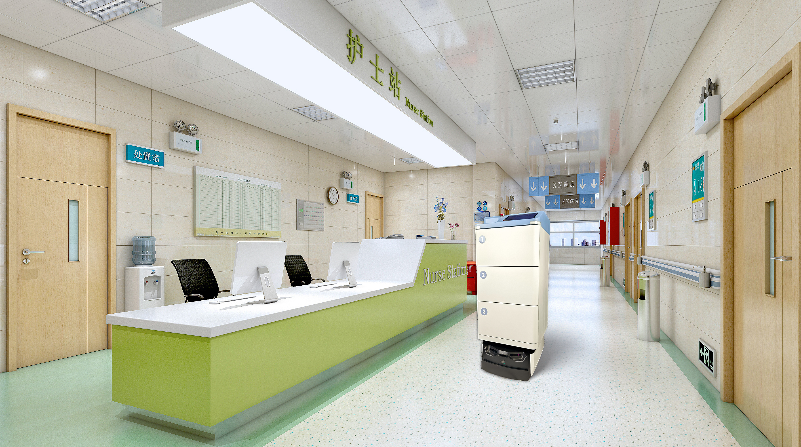

医用配送机器人续航多久？自动回充与不间断配送方案

医院物流是 7×24 高频需求，机器人跑一半没电就麻烦了。续航和充电怎么解决，直接决定它能不能真正"无人化"。
续航与作业节拍
双擎 FTR 系列医院物资运输机器人按任务节拍循环作业，在药房、检验科、病房之间连续运转。机器人根据任务密度与路径自动安排作业与补给，避免"半路趴窝"，让护理与运送人员不必再为"谁去补电"分心。
自动回充怎么排
任务间隙或低电量时，AMR 自主返回充电位，由 RCS 机器人智能控制系统统一编排充放电与任务调度，避免多台机器人"抢桩"，保证 fleet 整体在线率。调度系统会综合任务优先级与电量曲线，把补给安排在不影响业务峰值的窗口。
不间断配送保障
RCS 多机协同可在单台充电时调度其它机器人顶上，支撑门诊、住院、夜班等时段的药品与标本配送，让物流不因单机补能而中断。这种"此消彼长"的冗余设计，是 24 小时医院物流稳定的关键。
落地佐证
双擎医院机器人已在贵州省人民医院、北京中日友好医院、深圳市妇幼保健院等机构部署，覆盖跨时段的高频院内转运，验证了自动回充在真实业务中的可用性。
配送机器人需要人工换电池吗？
双擎 AMR 支持自动回充，由 RCS 编排充放电与任务，无需频繁人工换电。
医院夜间配送能无人值守吗？
RCS 多机协同可在单台充电时调度其它机器人顶上，支撑夜班不间断配送。